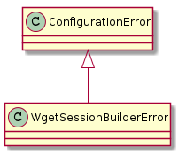
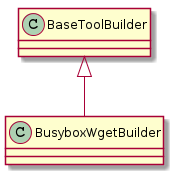

A builder of busybox wget sessions.

| WgetSessionBuilderError | An error to raise if the config file has an error |

| BusyboxWgetBuilder(*args, **kwargs) | A class to build a wget session | ||
| BusyboxWgetBuilder.data_file |
|
||
| BusyboxWgetBuilder.url | The URL of the http (or ftp) server and file | ||
| BusyboxWgetBuilder.connection | This is a hack that ignores the possibility of multiple nodes | ||
| BusyboxWgetBuilder.storage | Storage to send output to | ||
| BusyboxWgetBuilder.repetitions | |||
| BusyboxWgetBuilder.max_time | |||
| BusyboxWgetBuilder.product |
|
||
| BusyboxWgetBuilder.parameters |
|